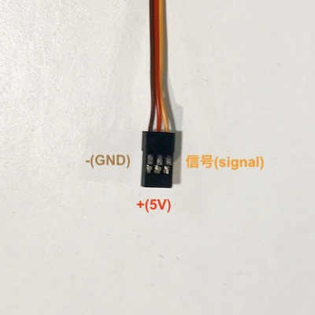

インプットデバイス（センサー）
周辺環境情報を取得し送信する。
人間でいったら「感覚器官」。耳や目、皮膚など。
デジタルセンサーとアナログセンサーがあり、デバイスそのものは、
デジタルはHIGHかLOW（0か1）などの数値を離散的に返し、
アナログは0〜1023などの値を概ね電圧を使い連続的に返す。
デバイスによっては，デジタル信号を返すものもある。
getSensVal
センサーで情報を取得し，パソコンのシリアルポートから値を受け取ってみる
事前準備
- 電源を入れていない状態で，センサーをArduinoにつなぐ
- センサーから出てきている線は3本
- それぞれ以下のような配置
- ジャンパー線を使って，Arduinoと接続する信号はA0


！写経！
//getSensorVal
void setup() {
// 9600bpsで通信をするように，シリアルポートを初期化
Serial.begin(9600);
}
void loop() {
// アナログピン0(A0)の値を読み，セットバリュー変数に格納
int sensorValue = analogRead(A0);
// 読み込んだ値をシリアルポートに（IDEで読める形で）送信
Serial.println(sensorValue);
// 安定的に値を読めるように，1/1000秒まつ
delay(1);
}
アップロード＆値を取得
- 先ほどの手順と同様に検証後のアップロード
- 組み込みLEDがフラッシュしたら、エディタの左側にある"Monitor"を開く
task
- 色々な種類のセンサーを使って、返ってくる値を確認する
アウトプットデバイス（アクチュエーター）
命令に合わせて何かしらの仕事をし出力する。
人間で言ったら、筋肉や声帯など。
DCモータは電流から磁場を発生し回転運動に変え、
サーボモータは上記と仕事＋信号を受け取りた上で、位置（角度）の制御が可能。
ディスプレイは液晶などを使い図形を描ける。
スピーカーは音が出て、LEDは光るという仕事をそれぞれ行える。
helloServo
ContinuousRotationServo(連続回転サーボ)を動かしてみる
事前準備
電源を入れていない状態で，サーボをArduinoにつなぐ
- サーボから出てきている線は3本
- それぞれ以下のような配置 
- ジャンパー線を使って，Arduinoと接続する信号はD10


！写経！
//helloServo(continuousRotation)
// ライブラリの読み込み
#include
// サーボオブジェクトを作る
Servo myservo;
//中間位置を設定
const int neutral = 95;
void setup () {
myservo.attach(10); // サーボの信号ピンをD9に
}
void loop () {
// 時計回り高速
myservo.write(neutral - 90);
delay(2000);
// 停止
myservo.write(neutral);
delay(1000);
// 反時計回り高速
myservo.write(neutral + 90);
delay(2000);
// 停止
myservo.write(neutral);
delay(1000);
// 時計回り低速
myservo.write(neutral - 10);
delay(2000);
// 停止
myservo.write(neutral);
delay(1000);
// 反時計回り低速
myservo.write(neutral + 10);
delay(2000);
// 停止
myservo.write(neutral);
delay(1000);
}
サーボはどうやって制御されている？
- PWMで制御しています